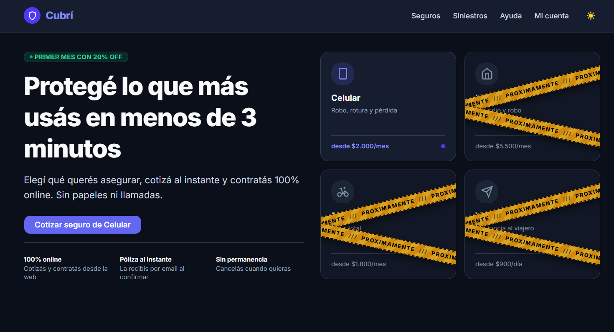
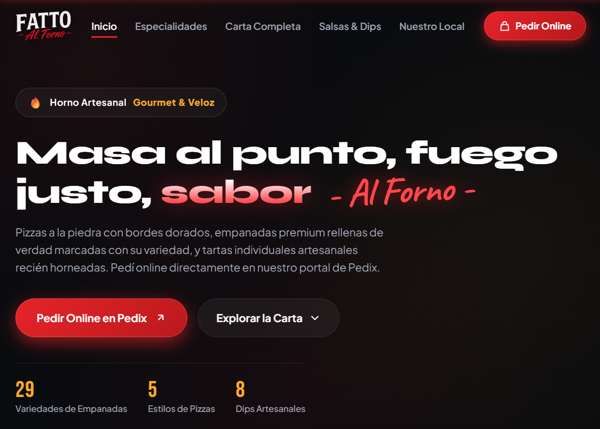
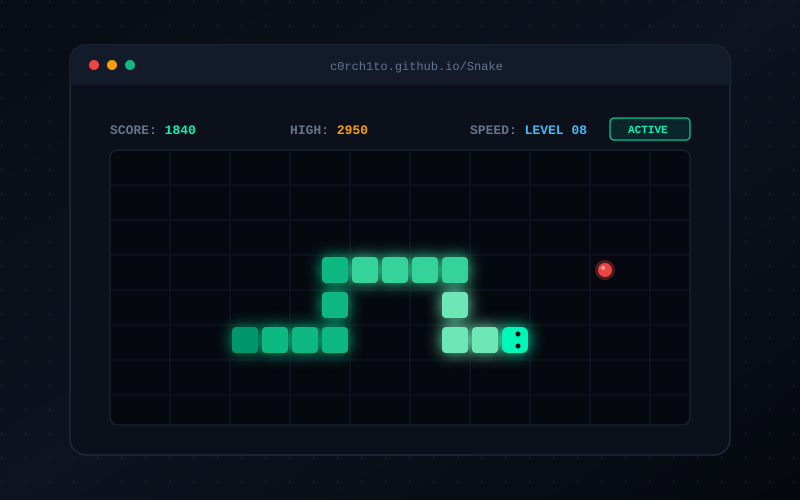

+3
Años de formación en Sistemas
Hola, soy Dante Sala. Diseño productos digitales intuitivos y accesibles, uniendo el rigor de la arquitectura de sistemas con una cuidada sensibilidad estética moderna.
+3
Años de formación en Sistemas
5+
Proyectos digitales desarrollados
100%
Accesibilidad WCAG 2.2 AA
15+
Herramientas y tecnologías dominadas
Soy estudiante de la Licenciatura en Sistemas de Información con un marcado perfil integrador entre el diseño de experiencia de usuario (UX/UI) y la arquitectura front-end.
Entiendo el diseño no como un mero adorno estético, sino como una herramienta estratégica para resolver problemas complejos de interacción, reducir la fricción cognitiva y garantizar que cualquier persona, independientemente de sus capacidades o dispositivo, pueda interactuar de forma intuitiva.
La investigación empírica y los tests de usabilidad superan a las suposiciones teóricas.
Menos sobrecarga visual, mayor rapidez de decisión y accesibilidad estricta WCAG AA.
Diseñar entendiendo la viabilidad técnica garantiza fidelidad exacta en producción.
Herramientas y disciplinas aplicadas en cada fase del ciclo de vida del producto.
Descubrimiento de necesidades de usuarios, evaluación heurística y modelado de flujos.
Construcción de sistemas de diseño visual, prototipos de alta fidelidad y pautas WCAG.
Implementación fiel de interfaces interactivas con tecnologías web estándares y código limpio.
Control de versiones colaborativo, auditorías de performance y despliegue continuo.
Soluciones digitales que combinan investigación de usuarios, diseño visual riguroso y código optimizado.

2026Flujo de contratación digital 100% online para aseguradora automotriz. Arquitectura SPA de 7 pantallas con stepper reactivo, cotizador en tiempo real, validación de formularios y modo oscuro optimizado.
Resultado clave: Reducción del tiempo de cotización a 50 segundos y tasa de completitud de formulario del 88% en pruebas de usabilidad.
Landing page comercial de alta fidelidad maquetada desde especificaciones en Figma. Desarrollo responsivo estructurado con tokens de diseño, capas en cascada (@layer), carruseles nativos con scroll-snap y cero dependencias de JavaScript.
Aprendizaje: Implementación de microinteracciones fluidas y componentes interactivos 100% CSS, logrando 99 en rendimiento móvil.

2025Landing page comercial para la pizzería artesanal Fatto Al Forno (Concepción del Uruguay). Diseño y desarrollo web con catálogo digital de productos (pizzas a la piedra, empanadas y tartas), información del local, horarios y enlaces de pedido.
Experiencia: Trabajo real de maquetación web independiente: diseño visual adaptado al rubro gastronómico, optimización de recursos y estructura responsive.

2024Reinterpretación minimalista del clásico videojuego de la serpiente, desarrollado como primer desafío de programación web en JavaScript. Bucle de animación (Game Loop), detección precisa de colisiones matriciales y registro de puntaje máximo local.
Aprendizaje: Comprensión profunda de la máquina de estados, renderizado en Canvas/DOM y manipulación de eventos de teclado.
Evolución académica y proyectos prácticos que consolidan mi perfil profesional.
2024 — Presente
Facultad de Ciencias Exactas y Tecnología
Ciclo 2026
Cátedra Mg. Ernesto Ledesma
2025 — 2026
Clientes Gastronómicos & Proyectos Personales
Estoy disponible para incorporarme a equipos de producto, realizar pasantías formativas o colaborar en proyectos desafiantes de diseño y maquetación web.